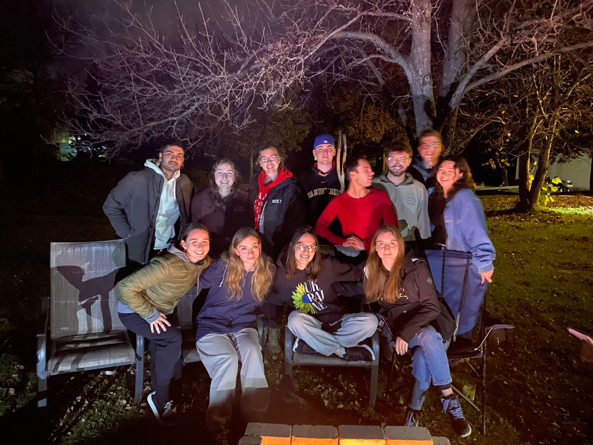
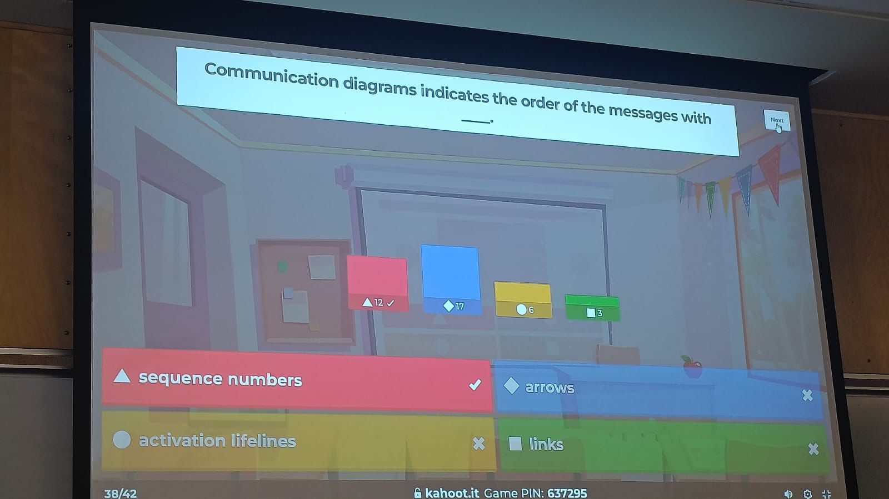

Coming back to the University of Winnipeg for the Winter 2025 term, I was more motivated than ever. After my exchange experience, I wanted to give back and stay involved—and this semester gave me a chance to do just that.
I balanced a full course load, worked as a Teaching Assistant for MATH-0042, and continued mentoring students in the STEM Peer Program. On top of that, I started volunteering at the UWSA Food Bank and joined the Humane Society as a new volunteer.
This semester wasn’t easy—I had multiple exams, projects, and deadlines—but I loved how everything I did connected back to what I care about: education, technology, and helping people. I also joined an AI project under a professor’s mentorship, where I applied concepts from my previous courses to real-world problems.
What I learned this term is that involvement creates impact. Whether it’s teaching math to someone struggling or helping out at a food bank, every little action adds to who I am as a student and as a person.